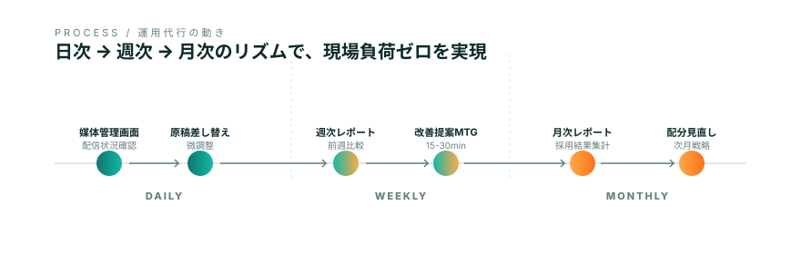

9:00 - 17:00 / 媒体管理に4時間以上を消費
媒体A 配信確認 40min
原稿差替 4職種 1h
媒体担当B 定例 30min
面接 1件 45min
媒体C 媒体担当連絡 30min
先週分レポート集計 1h+
媒体ごとの管理画面、毎週の原稿差し替え、媒体担当との連絡、月次レポート集計、配分の見直し。
現場の業務工数が「採用業務そのもの」を圧迫していませんか。
aggregateは、運用業務を引き取り、整理し、戻すべき業務（面接・配属・人事戦略）を守ります。
媒体管理・原稿差替・媒体担当連絡。気づけば1日の半分が運用業務に消えています。本当に時間を使うべき、面接・配属・採用戦略の仕事に時間が戻るように、運用は引き取らせてください。
ある採用担当者の典型的な1日です（イメージ）。
運用業務に追われて、本来やるべき面接準備・候補者対応・社内調整が後ろ倒しになっていませんか。
アウトソースは「丸投げ」ではなく「分担」。何を任せ、何を持つかを最初に決めるところから始めます。

運用は属人化しないリズムで回します。週1回の定例で意思決定だけしていただければ、現場業務は止まりません。
媒体別・職種別の応募数・応募単価・歩留まりを1枚にまとめ、月曜午前にお送りします。
数字をもとに、改善が必要な原稿・配分の提案を作成。承認いただいた範囲で当週から反映します。
レポート + 提案を15分で確認。採用担当者の判断が必要な事項のみご相談します。
承認された変更を媒体側へ反映。媒体担当者とのやりとりはaggregateで巻き取ります。
変更履歴・効果検証・翌週の論点をまとめ、月曜のレポートに繋ぎます。
運用ナレッジは個人に依存させません。チェックリストとナレッジベースで仕組み化し、御社採用チームと並走します。